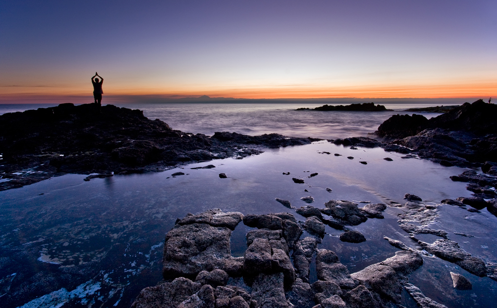

Además de unas playas excelentes, Gran Canaria tiene mucho que ofrecer a todos
los niveles: cultural, paisajístico y turístico. Es un destino muy completo que
te permite combinar un turismo de sol y playa con un turismo cultural y de naturaleza.
Pueblos con encanto, espacios naturales únicos, lugares declarados Patrimonio de
la Humanidad, museos y preciosos monumentos son algunos de
los atractivos que harán que te enamores de esta fantástica isla canaria.
Al igual que el resto de las Islas Canarias, está bendecida por un clima envidiable,
una eterna primavera que invita a vivir intensamente su rica naturaleza y diversidad paisajística,
sus encantadoras localidades marineras y del interior, sus tradiciones, cultura e historia.
Gran Canaria completa su innumerable oferta con la variada propuesta de actividades culturales,
de ocio y deportivas, así como una amplia gama de restaurantes, establecimientos comerciales y
centros de bienestar.